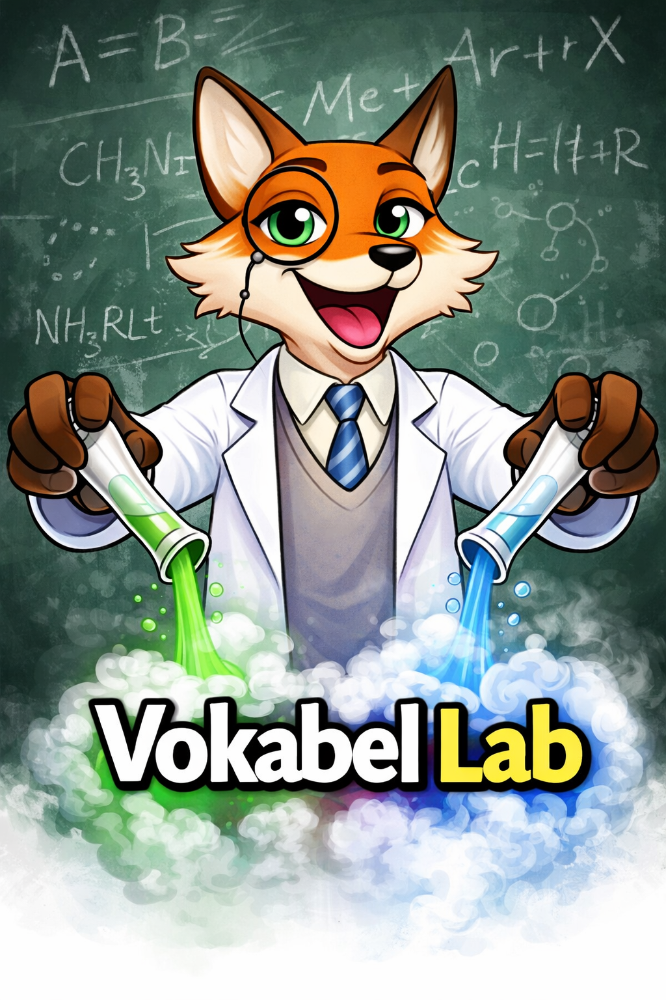

Vokabel Lab • Alemán con ritmo
Tu laboratorio de vocabulario en formato pop-up
Repasa por temas, mezcla tipos de palabra y convierte cada clase en una sesión rápida, visual y bastante más divertida de estudiar.
Práctica visual, tarjetas, escritura y test en una sola pantalla.

Práctica de vocabulario
Elige cómo quieres repasar el vocabulario de tus clases de alemán.
Tema completo
Selecciona un Thema y practica todas sus palabras de una vez.
Rápido y directo →
Modo avanzado
Combina varios temas y filtra por tipo de palabra: verbos, sustantivos, adjetivos…
Control total →
Tu progreso